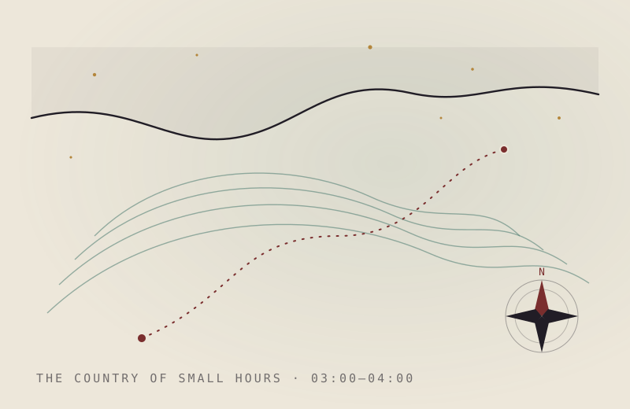

Story· 14 Jun 2026· 4 min read
The Cartographer of Small Hours
He mapped the country that only exists between three and four a.m., and sold the charts to no one.
There is a nation that convenes each night in the hour nobody keeps, and my uncle spent thirty years surveying its coastline with a pencil and a failing torch. He called it the country of small hours — the territory that rises between three and four in the morning, once the ordinary map of the day has been folded and put away.
You have been there. Everyone has, though most refuse to admit it in daylight. It is the place you wash up when sleep withdraws its tide and leaves you stranded on the shoal of your own thinking. My uncle simply decided, sometime in his forties, that if he was going to be exiled there nightly he might as well learn the geography.
He drew rivers first. The rivers of the small hours are made of half-remembered conversations, and they run backward — always toward the source, toward the thing you should have said. He mapped a whole delta where a single argument from 1987 fanned out into a hundred distributaries of regret. He labelled them in a hand so small I needed his magnifying glass to read the names.
Then the mountains: the range he called the Should-Haves, whose peaks were never summited because you always woke before you reached them. And the marshes of the merely anxious — low, grey, endless, humming with the sound of a tap left dripping in a house you no longer own.

What surprised me, going through the box after he died, was how tender the maps were. I had expected an atlas of dread. Instead there were quiet coves he'd named after small mercies — a bay called The Sound of Rain on a Roof You Are Dry Beneath, an island marked simply here it is briefly enough.
He never sold a chart. He never showed them to anyone but me, and only once. When I asked why he didn't publish — he was, in the daylight country, a surveyor by trade, and good at it — he looked at me with the particular patience he saved for stupid questions from people he loved.
“A country like that,” he said, “would not survive being visited on purpose.”
I think about that more than I should, in the hour I have inherited from him. Because here is the thing the maps got right, the thing I only understood once I began drawing my own: the country of small hours is not somewhere you are lost. It is somewhere you are, briefly, the only cartographer awake — and the whole strange nation, rivers running backward and all, is waiting to be gently, accurately, forgivingly described.
Then the light comes up over the marshes, and the tide of sleep or morning rolls back in, and the coastline you spent all night surveying folds itself away. You put down the pencil. You keep the map. You wait for the country to convene again.